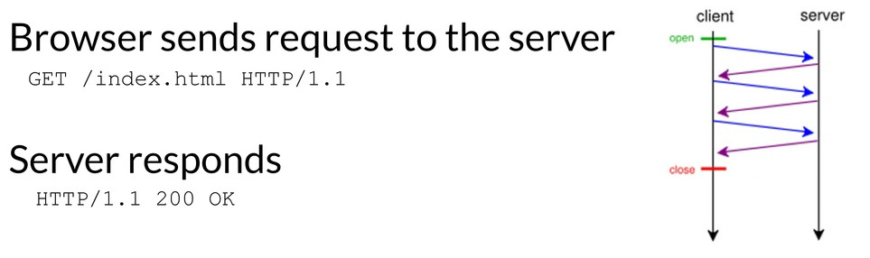
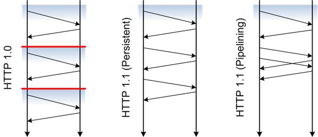
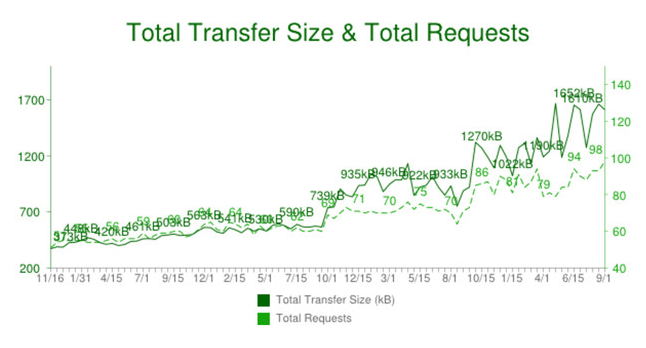
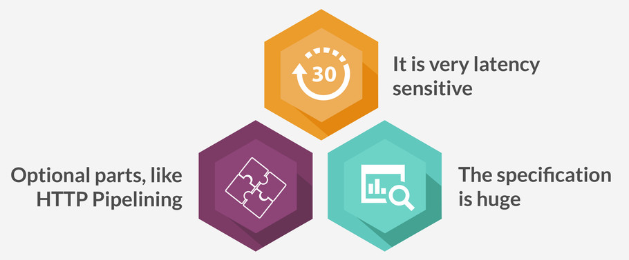
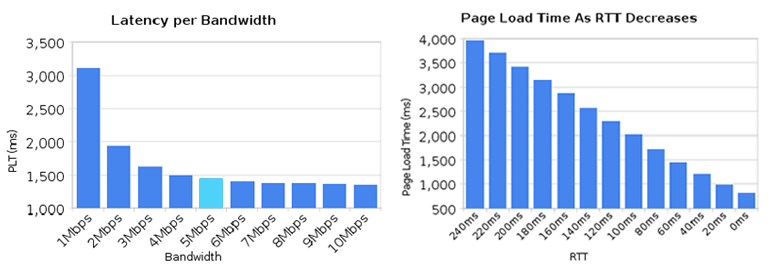
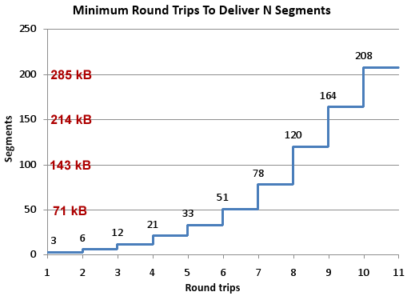
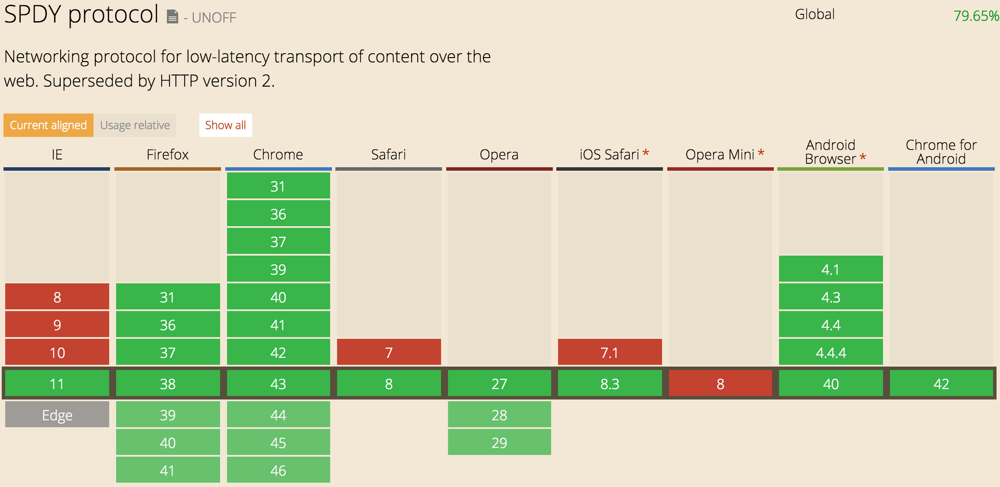

HTTP/2 is coming, look busy
Vitaly Kondratiev
May 2015
@vitkon
HTTP serves. Since 1990.
HTTP evolution
The number of requests increases
Top 100 sites
Data for 2010—2014 (Http Archive)
The state of HTTP nation
- 12 distinct hosts per page
- 78 distinct requests per page
- 1,232 KB transfered per page
Resulting in typical render times of 2.6—5.6 seconds
HTTP 1.1 has issues
Some HTTP 1.1 problems
Bandwidth vs Latency

TCP "Slow Start"
It's a feature, not a bug

* Modern linux kernel allows TCP to advertise 10 Max Segment Size (MSS) on the first round trip
that roughly equates to 14 Kb
Why not HTTP pipelining?
- The server must send it's responses in the same order that requests were received.
- The entire connection remains first-in-first-out (FIFO) and Head-of-line (HOL). Blocking is inevitable.
As a result...
- In most browsers HTTP pipelining is disabled
- Or not implemented at all
- Browsers achieve multiplexing by a hack — opening multiple connections to servers
Developers invented
- Resources concatenation
- Image spriting
- SVG fonts
- Assets sharding
- Resource inlining
- Preloading resources
- Reducing cookie size
- Not using @import
- Loaders like Browserify
- and so on...
HTTP/2 addresses these issues:
- Multiplexing, allowing multiple requests to flow over a single connection
- Prioritisation, providing the ability to indicate that one resource is more important than another and should hence jump to the head of the line
- Compression, making compression universal and extending it to headers
- Server Push, allowing the server to give content to a user-agent before it is asked for
- A strong recommendation for encryption, current implementations require it
Streaming
HTTP/2 Features
- It's a binary protocol, not text one
- Only one connection per server (session)
- Browser and Server exchange frames
- Each frame belongs to stream
- Streams are multiplexed
- Server push
One connection to the server
should be enough
Not 6 per domain
as most browsers do
Clients support

Servers support
- Apache with mod_spdy
- Node with node-spdy
- Nginx with "listen 443 ssl spdy;"
- Jetty / Netty — won't fit in one line
Implementations
Native C#, Erlang, Java, Objective-C,
Node, Python, Ruby libraries
https://github.com/http2/http2-spec/wiki/Implementations
TLS is a requirement
Transport Layer Security (TLS) is a must
for current implementation
How about IE support?
- HTTP/2 negotiation happens at the time of TLS handshake
- If client doesn’t support it, it will fallback to HTTP 1.1 without a penalty
Proposed standard
Published in May 2015
RFC 7540
Let's Compare
HTTP/2 Benefits
- Full request & response multiplexing
- Mechanism for request prioritisation
- Stream and connection flow control
- Many small files? No problem
- Better TCP throughput
- Fewer TCP connections
- More efficient use of server resources
- Low overhead HTTP transfers
Opportunities
-
Develop smarter servers
Improved prioritisation,
Stream flow control,
Smart resource push
-
Develop smarter clients
Low latency,
Low overhead,
Smarter caching,
More granular components
-
Help our clients to migrate to HTTP 2.0
HTTP 1.1 will be around for a while,
Smart proxies / load balancers